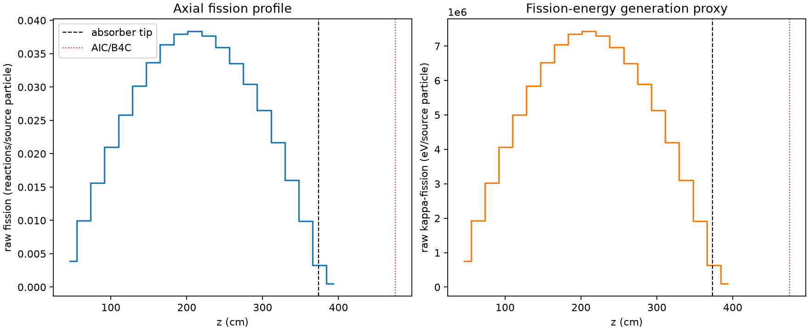
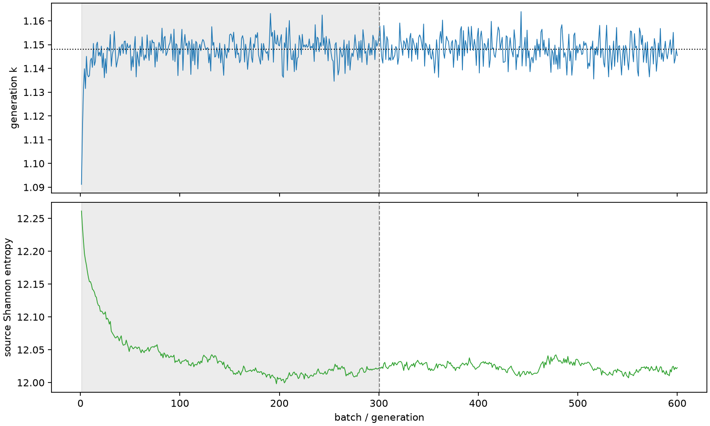

| field | value |
|---|---|
| experiment | V2-STAGE_256_OGRENCI_01-0026 |
| k | 1.148104891171784 |
| MC standard error | 0.0001907498706803875 |
| seconds | 1064.9736530160008 |
| acceptance | not_assessed |
| convergence | review_required |
Completed is output integrity only; physical and statistical review required. Zero tallies do not prove zero production or zero uncertainty.
| diagnostic | value |
|---|---|
| geometric fuel voxels | 5280 |
| zero fission tally voxels | 0 |
| low signal fuel voxels | 0 |
| low signal fission share | 0.0 |
| low signal kappa share | 0.0 |
| important fission share | 0.95005249292314 |
| previous filter included | 5280 |
| duration estimate s | 1562.5173488400023 |
| actual minus estimate s | -497.5436958240016 |
| fission relative MC error | statistics |
|---|---|
| all_geometric_fuel | {"voxels": 5280, "positive_mean_voxels": 5280, "zero_mean_voxels": 0, "undefined_relative_error_voxels": 0, "median": 0.009558184248773485, "p95": 0.03206932191839102, "maximum": 0.07473422845189782} |
| low_signal | {"voxels": 0, "positive_mean_voxels": 0, "zero_mean_voxels": 0, "undefined_relative_error_voxels": 0, "median": null, "p95": null, "maximum": null} |
| important_95pct | {"voxels": 4068, "positive_mean_voxels": 4068, "zero_mean_voxels": 0, "undefined_relative_error_voxels": 0, "median": 0.008800744698597481, "p95": 0.012740084599285438, "maximum": 0.016279376529768196} |
| outside_previous_filter | {"voxels": 0, "positive_mean_voxels": 0, "zero_mean_voxels": 0, "undefined_relative_error_voxels": 0, "median": null, "p95": null, "maximum": null} |
| kappa_fission relative MC error | statistics |
|---|---|
| all_geometric_fuel | {"voxels": 5280, "positive_mean_voxels": 5280, "zero_mean_voxels": 0, "undefined_relative_error_voxels": 0, "median": 0.009547836443908133, "p95": 0.03203089122408013, "maximum": 0.07457055693555303} |
| low_signal | {"voxels": 0, "positive_mean_voxels": 0, "zero_mean_voxels": 0, "undefined_relative_error_voxels": 0, "median": null, "p95": null, "maximum": null} |
| important_95pct | {"voxels": 4068, "positive_mean_voxels": 4068, "zero_mean_voxels": 0, "undefined_relative_error_voxels": 0, "median": 0.008791044020913512, "p95": 0.012724177510319953, "maximum": 0.016264065822104237} |
| outside_previous_filter | {"voxels": 0, "positive_mean_voxels": 0, "zero_mean_voxels": 0, "undefined_relative_error_voxels": 0, "median": null, "p95": null, "maximum": null} |
| axial bin | fission share | kappa-fission share |
|---|---|---|
| 1 | 0.008342605736359674 | 0.00834304138140438 |
| 2 | 0.021307914392314078 | 0.021307851575513924 |
| 3 | 0.03338486898978106 | 0.03338489743443315 |
| 4 | 0.044775541030574184 | 0.044775402449332924 |
| 5 | 0.055047299595354336 | 0.05504722131004637 |
| 6 | 0.06435346862820439 | 0.06435342689365119 |
| 7 | 0.07193657086235568 | 0.07193646485899653 |
| 8 | 0.07770126605664297 | 0.07770114295836082 |
| 9 | 0.08108006596215013 | 0.08108000863066221 |
| 10 | 0.08183461852884862 | 0.08183460319238092 |
| 11 | 0.08039674394657859 | 0.08039635211405803 |
| 12 | 0.07681226241287588 | 0.07681179665710232 |
| 13 | 0.07164611306025861 | 0.07164577418593675 |
| 14 | 0.06497391265943722 | 0.06497395188698336 |
| 15 | 0.05651872146100643 | 0.05651863617922415 |
| 16 | 0.04633679413933562 | 0.04633668198397032 |
| 17 | 0.03420590728188868 | 0.03420586915327246 |
| 18 | 0.021181789030488007 | 0.021181703981432952 |
| 19 | 0.0070496145293468095 | 0.007050708761757162 |
| 20 | 0.0011139216961988526 | 0.0011144644114800886 |
Histories include the inactive-to-active transition at batch 300. kappa-fission approximates fission energy production, not total heat deposition.

